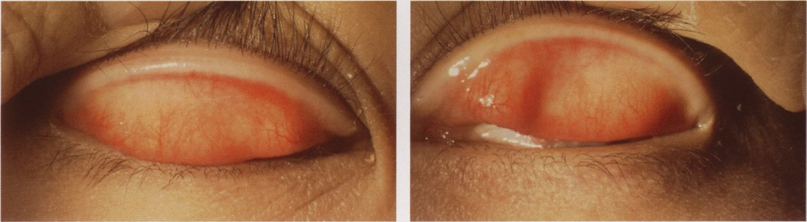
| 選択肢 | 解説 |
|---|---|
| ａ 抗菌薬 | 細菌性結膜炎に用いる。細菌性結膜炎は膿性眼脂が主体で、瘙痒より「目やに」が主訴になる。本例はアレルギー性であり細菌感染ではない。 |
| ｂ 人工涙液 | ドライアイ（涙液減少型）に用いる。アレルゲンを洗い流す補助にはなるが、Ⅰ型アレルギー反応そのものを抑える薬ではない。 |
| ◯ ｃ 抗アレルギー薬 | 花粉症の既往があり、瘙痒感を主訴とし、上眼瞼結膜に乳頭増殖と充血を認める——アレルギー性結膜炎である。治療の第一選択は抗アレルギー点眼薬で、肥満細胞からの脱顆粒を抑えるメディエーター遊離抑制薬（クロモグリク酸）と、H1受容体拮抗薬（オロパタジン、ケトチフェン）がある。 |
| ｄ 副交感神経刺激薬 | ピロカルピンなどの縮瞳薬で、閉塞隅角緑内障の発作時に隅角を開く目的などで用いる。アレルギーとは無関係である。 |
| ｅ 炭酸脱水酵素阻害薬 | 房水の産生を抑えて眼圧を下げる緑内障治療薬（ドルゾラミド点眼、アセタゾラミド内服）である。 |
| 主訴 | 眼 脂 | 結膜の所見 | 治療 | |
|---|---|---|---|---|
| アレルギー性 | 瘙痒感 | 漿液性・粘性 | 乳頭増殖・浮腫 | 抗アレルギー点眼 |
| ウイルス性 | 充血・流涙・異物感 | 漿液性（水様） | 濾胞増殖・耳前リンパ節腫脹 | 対症療法＋感染対策 |
| 細菌性 | 目やに | 膿性 | 乳頭増殖 | 抗菌点眼 |
| クラミジア性 | 慢性の充血・眼脂 | 粘液膿性 | 大きな濾胞（下円蓋部）・遷延 | マクロライド系の全身投与 |
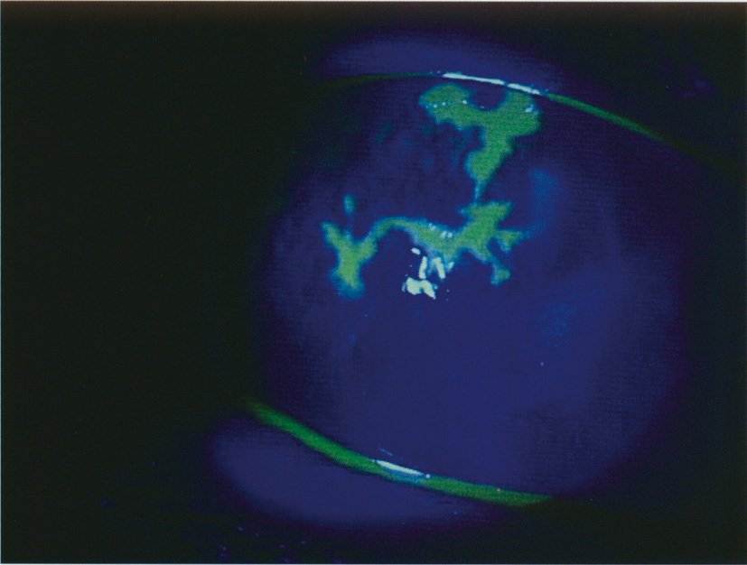
| 選択肢 | 解説 |
|---|---|
| ａ 縮瞳する。 | 角膜ヘルペスそのものが縮瞳をきたすわけではない。虹彩毛様体炎を合併すれば毛様体筋の攣縮で縮瞳しうるが、本疾患の定型的な所見ではない。 |
| ｂ 再発は稀である。 | まったく逆である。単純ヘルペスウイルスは初感染後に三叉神経節へ潜伏し、発熱・紫外線・ストレス・免疫抑制を契機に再活性化する。再発を繰り返して角膜混濁が蓄積することが視力予後を悪くする。 |
| ◯ ｃ 角膜知覚が低下する。 | 写真はフルオレセインで樹枝状に染まる角膜上皮病変＝樹枝状角膜炎で、角膜ヘルペス（単純ヘルペスウイルス性角膜炎）である。ウイルスが三叉神経を介して角膜へ到達し神経を障害するため、角膜知覚が低下する。「病変が派手なわりに痛みが乏しい」ことが診断の手がかりになり、角膜知覚検査（Cochet-Bonnet）が有用である。 |
| ｄ 自己免疫疾患である。 | 単純ヘルペスウイルスによる感染症である。ただし実質型（円板状角膜炎）はウイルス抗原に対する免疫反応が主体であり、この病型に限ってはステロイドを（抗ウイルス薬と併用で）用いる。 |
| ｅ 治療に副腎皮質ステロイドを用いる。 | 上皮型（樹枝状角膜炎）にステロイド単独は禁忌である。ウイルスの増殖を助長して地図状角膜潰瘍へ悪化させる。治療はアシクロビル眼軟膏（抗ウイルス薬）が基本である。実質型では抗ウイルス薬の下でステロイドを併用するが、本問の写真は上皮型である。 |
| 疾患 | 特徴的所見 | 背景 | 治療 |
|---|---|---|---|
| 角膜ヘルペス（上皮型） | 樹枝状に染色・角膜知覚低下 | HSV-1の再活性化（再発性） | アシクロビル眼軟膏。ステロイド単独は禁忌 |
| 細菌性角膜炎 | 境界不明瞭な白色浸潤・前房蓄膿・強い眼痛 | コンタクトレンズ（緑膿菌）・外傷 | 抗菌点眼の頻回投与 |
| 真菌性角膜炎 | 羽毛状の縁・衛星病巣・緩徐な進行 | 植物による外傷・ステロイド長期使用 | 抗真菌薬（ピマリシン等） |
| アカントアメーバ角膜炎 | 放射状角膜神経炎・輪状浸潤・激痛 | ソフトコンタクトレンズの不適切なケア | 掻爬＋消毒薬・抗真菌薬 |
| 帯状疱疹眼症 | 偽樹枝状病変・Ⅴ1領域の皮疹（Hutchinson徴候） | VZVの再活性化 | バラシクロビル全身投与 |
| 選択肢 | 解説 |
|---|---|
| ａ 翼状片 | 翼状片は感染症ではない。紫外線・粉塵・乾燥などの慢性的な外的刺激により、鼻側の球結膜下組織が線維血管性に増殖して角膜へ三角形に侵入する。屋外労働者・高齢者に多い（NO.61）。 |
| ◯ ｂ 咽頭結膜熱 | アデノウイルス（主に3型）による。発熱・咽頭炎・結膜炎の三徴をとり、プールを介した流行から「プール熱」とも呼ばれる。学校保健安全法の第二種感染症で、主要症状消退後2日を経過するまで出席停止となる。 |
| ｃ 春季カタル | Ⅰ型アレルギーによる重症のアレルギー性結膜疾患で、感染症ではない。小児〜若年男子に多く、巨大乳頭とシールド潰瘍を伴う（NO.58）。 |
| ｄ 巨大乳頭結膜炎 | コンタクトレンズ・義眼・縫合糸などの機械的刺激とアレルギー反応により上眼瞼結膜に巨大乳頭を生じるもので、感染症ではない。原因の除去が治療の柱である。 |
| ◯ ｅ 急性出血性結膜炎 | エンテロウイルス70型やコクサッキーウイルスA24変異型による。潜伏期が約1日と極めて短く、結膜下出血を伴う強い充血が特徴で「アポロ病」とも呼ばれる。こちらも学校保健安全法の第三種（その他の感染症）に位置づけられ、医師が感染のおそれがないと認めるまで出席停止となる。 |
| 疾患 | 原因 | 決め手 |
|---|---|---|
| 咽頭結膜熱 | アデノウイルス3型 | 発熱＋咽頭炎＋結膜炎の三徴。プール熱 |
| 急性出血性結膜炎 | エンテロウイルス70型・コクサッキーA24変異型 | 潜伏期約1日・結膜下出血 |
| 流行性角結膜炎 | アデノウイルス8型など | 潜伏期1〜2週・角膜上皮下混濁・偽膜 |
| 翼状片 | 紫外線などの外的刺激（非感染性） | 鼻側から角膜へ侵入する三角形の線維血管組織 |
| 春季カタル | Ⅰ型アレルギー（非感染性） | 巨大乳頭・Horner-Trantas斑・シールド潰瘍 |
| 巨大乳頭結膜炎 | 機械的刺激＋アレルギー（非感染性） | コンタクトレンズ・義眼・縫合糸 |
| 封入体結膜炎 | クラミジア（細菌） | 遷延する濾胞性結膜炎。マクロライドの全身投与 |
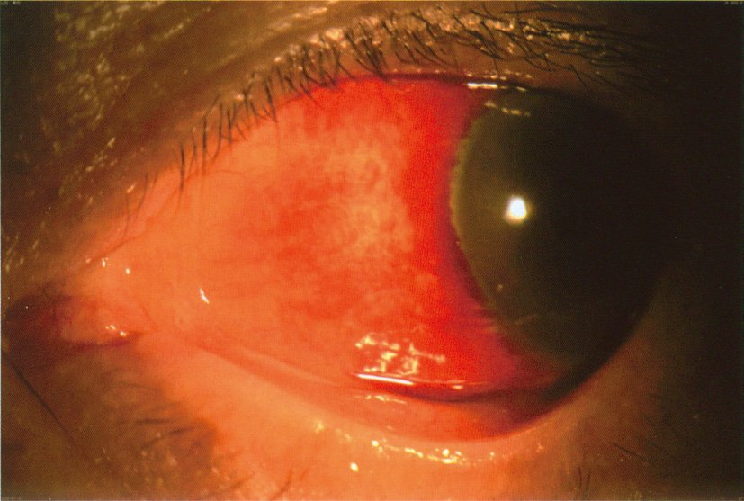
| 選択肢 | 解説 |
|---|---|
| ａ 霰粒腫 | 霰粒腫はマイボーム腺の慢性肉芽腫で、眼瞼内の無痛性の硬結として触れる。「眼が赤い」という球結膜の所見ではない。 |
| ｂ 睫毛乱生 | 睫毛が不規則な方向に生えて角膜・結膜を刺激する状態で、異物感・流涙・充血といった自覚症状を伴う。本例は「自覚症状はない」と明記されている。 |
| ｃ 眼瞼外反 | 眼瞼縁が外側へ反転して眼瞼結膜が露出する状態で、流涙・眼瞼結膜の充血や角化を伴う。写真の所見は眼瞼の位置異常ではなく球結膜の変化である。 |
| ◯ ｄ 結膜下出血 | 結膜下の細い血管が破れて球結膜下に血液が広がったもの。写真では境界のはっきりしたべったりとした鮮紅色の均一な赤みが球結膜に限局しており、個々の血管が拡張して見える「充血」とは見え方が異なる。自覚症状がなく、眼脂もなく、視力にも影響しないのが典型で、本人ではなく他人に指摘されて気付くことが多い。 |
| ｅ 流行性角結膜炎 | 流行性角結膜炎なら、流涙・異物感・漿液性眼脂・耳前リンパ節の腫脹圧痛といった自覚症状と随伴所見が揃うはずである。本例は「自覚症状なし・眼脂なし」であり合わない。 |
| 見え方 | 症状 | 意味 | |
|---|---|---|---|
| 結膜下出血 | 境界明瞭・べったりした鮮紅色 | 無症状 | 自然吸収を待つ（経過観察） |
| 結膜充血 | 網目状の赤み・周辺ほど濃い | 眼脂・異物感・瘙痒 | 結膜炎（アレルギー性・ウイルス性・細菌性） |
| 毛様充血 | 角膜輪部の周囲が濃い（深部の血管） | 眼痛・視力低下・羞明 | 虹彩毛様体炎・角膜炎・急性緑内障発作＝緊急性あり |
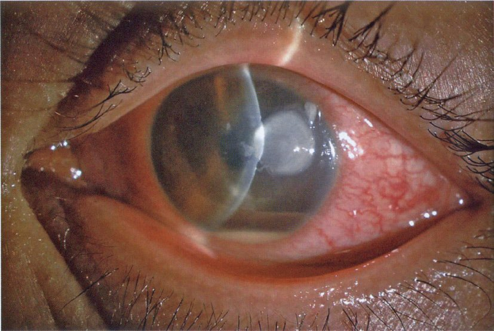
| 選択肢 | 解説 |
|---|---|
| ａ 春季カタル | 春季カタルは小児〜若年男子に多い重症アレルギー性結膜疾患で、主訴は瘙痒感であり、上眼瞼結膜の巨大乳頭が特徴である。2日で手動弁まで落ちるような急激な経過はとらない。 |
| ｂ 角膜ヘルペス | 角膜ヘルペスは樹枝状の上皮病変を呈し、角膜知覚が低下するため痛みはむしろ乏しい（NO.52）。写真のような角膜全体の白色混濁と前房蓄膿は典型的でない。 |
| ◯ ｃ 細菌性角膜炎 | コンタクトレンズ装用者に、2日で急速に進行する眼痛・充血・視力低下（眼前手動弁）——写真では角膜に広範な白色浸潤・混濁があり、下方に水平面をつくる前房蓄膿を認める。細菌性角膜炎（角膜潰瘍）である。とくに1か月ぶりの装用という記載は、ケースの中で保存液が汚染され菌が繁殖していた可能性を示唆する。ソフトコンタクトレンズ関連では緑膿菌が代表的で、進行が速く角膜穿孔に至りうる。 |
| ｄ 流行性角結膜炎 | アデノウイルスによる結膜炎で、漿液性眼脂・濾胞・耳前リンパ節腫脹を伴う。角膜病変は上皮下混濁であって前房蓄膿は生じず、視力が手動弁まで落ちることもない。 |
| ｅ クラミジア結膜炎 | クラミジアによる封入体結膜炎は慢性・遷延性の濾胞性結膜炎で、数週間の経過をとる。2日で急激に悪化する病態ではない。 |
| 起因 | 経過 | 特徴的所見 | 背景 |
|---|---|---|---|
| 緑膿菌 | 数日で急速に融解 | 輪状浸潤・黄緑色の粘稠な眼脂・穿孔 | ソフトコンタクトレンズ |
| ブドウ球菌・肺炎球菌 | 数日 | 境界明瞭な白色浸潤・前房蓄膿 | 外傷・眼表面疾患 |
| 真菌（Fusarium等） | 数週と緩徐 | 羽毛状の辺縁・衛星病巣・内皮斑 | 植物による外傷・ステロイド長期使用 |
| アカントアメーバ | 数週 | 所見に不釣り合いな激痛・放射状角膜神経炎・輪状浸潤 | SCLの不適切なケア（水道水） |
| 単純ヘルペス | 再発性 | 樹枝状病変・角膜知覚低下で痛みが乏しい | 誘因で再活性化 |
| 選択肢 | 解説 |
|---|---|
| ◯ ａ 終生免疫を獲得する。 | これが誤り。流行性角結膜炎の原因であるアデノウイルスには多数の型（8型・19型・37型・54型など）があり、感染で得られるのは型特異的な免疫にすぎない。別の型に再び感染しうるので終生免疫は成立しない。 |
| ｂ 院内感染の原因となる。 | 正しい。アデノウイルスはアルコールへの抵抗性が比較的高く環境中で長く生存するため、診察器具（眼圧計のプリズム・細隙灯の顎台）や医療者の手指を介して院内感染を起こす。眼科における院内感染対策の最重要疾患である（NO.76）。 |
| ｃ 感染経路は接触感染である。 | 正しい。涙液・眼脂に含まれるウイルスが手指・タオル・ドアノブなどを介して伝播する。「3日前に左眼 → 今朝から右眼」という本例の広がり方も、手を介した自家接触感染を示している。 |
| ｄ 学校を休まなければならない。 | 正しい。流行性角結膜炎は学校保健安全法の第三種の感染症であり、医師が感染のおそれがないと認めるまで出席停止となる。 |
| ｅ 感染予防のために手洗いが有用である。 | 正しい。流水と石けんによる手洗いが最も有効な予防策である。タオルの共用を避ける、入浴は最後にする、器具は消毒するといった指導を併せて行う。 |
| 疾患 | ウイルス | 特徴 | 出席停止 |
|---|---|---|---|
| 流行性角結膜炎〈EKC〉 | アデノ8・19・37・54型 | 潜伏期1〜2週・耳前リンパ節腫脹・偽膜・角膜上皮下混濁 | 第三種（感染のおそれがなくなるまで） |
| 咽頭結膜熱〈PCF〉 | アデノ3型 | 発熱＋咽頭炎＋結膜炎（プール熱） | 第二種（主要症状消退後2日） |
| 急性出血性結膜炎〈AHC〉 | エンテロ70型・コクサッキーA24変異型 | 潜伏期約1日・結膜下出血（アポロ病） | 第三種 |
| 選択肢 | 解説 |
|---|---|
| ａ 麻疹ウイルス | 麻疹ではカタル期に発熱・咳・鼻汁・結膜炎がみられ、頰粘膜にKoplik斑（白斑）が出現、その後に全身の発疹が現れる。本例は「頰粘膜に白斑なし」「皮疹を認めない」と明示的に否定されている。 |
| ◯ ｂ アデノウイルス | 発熱・咽頭炎（扁桃の白苔）・結膜炎という三徴が揃っており、咽頭結膜熱〈PCF〉である。原因はアデノウイルス（主に3型）で、幼児〜学童に多く、夏季にプールを介して流行するため「プール熱」とも呼ばれる。迅速診断キット（結膜・咽頭ぬぐい液）で確認できる。 |
| ｃ パルボウイルスB19 | 伝染性紅斑（りんご病）の原因である。頰部の境界明瞭な紅斑（平手打ち様）と四肢のレース状皮疹が特徴で、本例は「頰部を含む皮膚に皮疹を認めない」と否定されている。 |
| ｄ コクサッキーウイルス | ヘルパンギーナ（口蓋弓周囲の水疱・潰瘍と高熱）や手足口病の原因である。本例は「口腔内に水疱なし」と否定されている。なおコクサッキーA24変異型は急性出血性結膜炎の原因になるが、それは発熱・咽頭炎を伴わない。 |
| ｅ 単純ヘルペスウイルス | 小児の初感染ではヘルペス性歯肉口内炎（高熱・歯肉の発赤腫脹・口腔内のアフタ）をきたす。本例は「歯肉腫脹なし」「口腔内に水疱なし」と否定されている。 |
| ウイルス | 疾患 | 特徴的所見 | 本例での否定 |
|---|---|---|---|
| アデノウイルス | 咽頭結膜熱 | 発熱＋咽頭炎（扁桃白苔）＋結膜炎 | —（すべて合致） |
| 麻疹ウイルス | 麻疹 | Koplik斑・カタル症状・全身の発疹 | 頰粘膜に白斑なし／皮疹なし |
| パルボウイルスB19 | 伝染性紅斑 | 頰部の平手打ち様紅斑・レース状皮疹 | 頰部を含む皮膚に皮疹なし |
| コクサッキーウイルス | ヘルパンギーナ／手足口病 | 口蓋弓周囲の水疱・潰瘍 | 口腔内に水疱なし |
| 単純ヘルペスウイルス | ヘルペス性歯肉口内炎 | 歯肉の発赤腫脹・口腔内アフタ | 歯肉腫脹なし |
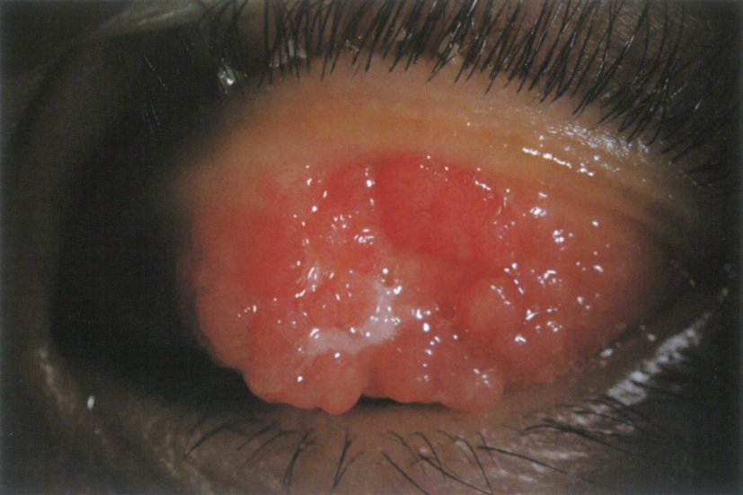
| 選択肢 | 解説 |
|---|---|
| ａ 霰粒腫 | 霰粒腫はマイボーム腺の慢性肉芽腫で、眼瞼内の限局した無痛性の硬結として触れる。瘙痒感を主訴とせず、上眼瞼結膜全面の乳頭増殖にもならない。 |
| ｂ 麦粒腫 | 麦粒腫は黄色ブドウ球菌による急性化膿性炎症で、発赤・腫脹・熱感・圧痛を伴う。1か月続く瘙痒感という経過に合わない。 |
| ◯ ｃ 春季カタル | 写真は左上眼瞼結膜を翻転したもので、敷石状（石垣状）に隆起した巨大乳頭が結膜全面を覆っている。14歳男子・両眼の瘙痒感が1か月続く・片眼の視力低下——春季カタルである。視力低下は、巨大乳頭が角膜上皮を擦ることと好酸球由来の細胞傷害性蛋白により生じるシールド潰瘍による。 |
| ｄ 流行性角結膜炎 | アデノウイルスによる結膜炎で、急性の充血・漿液性眼脂・濾胞・耳前リンパ節腫脹を呈する。1か月続く瘙痒感という経過も、巨大乳頭という所見も合わない（乳頭ではなく濾胞である）。 |
| ｅ クラミジア結膜炎 | 慢性・遷延性の濾胞性結膜炎で、下眼瞼結膜に大きな濾胞をつくる。性行為感染症としての封入体結膜炎が主で、主訴は瘙痒ではなく充血・眼脂である。 |
| 好発 | 結膜所見 | 角膜病変 | 治療 | |
|---|---|---|---|---|
| アレルギー性結膜炎 | 年齢問わず（花粉症） | 充血・浮腫・小乳頭 | なし | 抗アレルギー点眼（NO.51・NO.71） |
| 春季カタル | 10歳前後の男児 | 敷石状巨大乳頭・Horner-Trantas斑 | シールド潰瘍・点状表層角膜症 | 免疫抑制点眼＋ステロイド点眼 |
| 巨大乳頭結膜炎 | CL装用者・義眼 | 巨大乳頭（機械的刺激が原因） | まれ | 原因の除去（レンズ中止・変更） |
| アトピー性角結膜炎 | アトピー性皮膚炎の成人 | 下眼瞼結膜優位の乳頭・線維化 | 角膜潰瘍・円錐角膜・白内障・網膜剝離 | 皮膚科と並行して治療 |
| 選択肢 | 解説 |
|---|---|
| ａ 角膜知覚検査 | 角膜知覚検査は角膜ヘルペスや神経麻痺性角膜症を疑うときに行う。本例は機械的・低酸素性の急性上皮障害であり、まず確かめるべきは知覚ではなく上皮欠損の有無と範囲である。 |
| ｂ 涙液分泌検査 | Schirmer試験はドライアイを疑うときの検査で、慢性の異物感・眼精疲労を訴える例に行う（NO.68・NO.75）。本例は流涙しており涙液減少の状況ではない。 |
| ｃ 角膜曲率測定 | 角膜曲率測定（ケラトメトリー）はコンタクトレンズの処方や円錐角膜の評価、眼内レンズの度数計算に用いる。急性の眼痛の原因検索には役立たない。 |
| ｄ 角膜擦過培養検査 | 感染性角膜炎を疑ったときの検査である。発症からわずか数時間で、白色浸潤や前房蓄膿の記載もなく、まず感染を疑う状況ではない。擦過そのものが上皮をさらに傷つけるため、適応を絞って行う。 |
| ◯ ｅ フルオレセイン染色検査 | ハードコンタクトレンズの装用したままの就寝は角膜の低酸素と機械的刺激を招き、レンズを外した際に角膜上皮が剝離（角膜びらん）する。上皮が欠損すると三叉神経終末が露出するため、「外した直後からの強い眼痛」となる。フルオレセインは上皮の欠損部に入り込んでコバルトブルー光下で緑色に光るので、欠損の有無・範囲・形を即座に可視化できる——まず行うべき検査である。 |
| 病態 | 機序 | 所見 | 対応 |
|---|---|---|---|
| 角膜上皮剝離（びらん） | 低酸素＋機械的刺激 | フルオレセインで境界明瞭に染まる欠損・激痛 | レンズ中止・抗菌点眼・数日で治癒 |
| 点状表層角膜症 | 慢性の低酸素・乾燥 | びまん性の点状染色 | 装用時間の短縮・レンズの見直し |
| 感染性角膜炎 | レンズ・ケースの汚染 | 白色浸潤・前房蓄膿・強い眼痛 | 擦過培養＋抗菌点眼の頻回投与 |
| 巨大乳頭結膜炎 | 機械的刺激＋アレルギー | 上眼瞼結膜の巨大乳頭・瘙痒 | レンズの中止・変更 |
| 角膜内皮細胞の減少 | 慢性低酸素 | スペキュラーで細胞密度低下 | 長期装用者は定期検査 |
| 腱膜性眼瞼下垂 | 着脱時の反復牽引 | 瞼裂狭小・重瞼線の高位 | 挙筋前転術（第1章NO.10） |
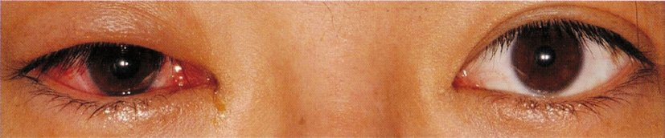
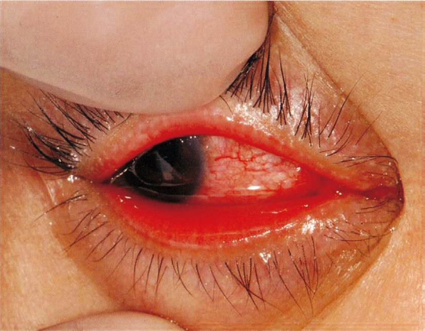
| 選択肢 | 解説 |
|---|---|
| ａ 眼 脂 | みられる。流行性角結膜炎では漿液性（水様）の眼脂が多量に出る。細菌性の膿性眼脂とは性状が異なるが、眼脂そのものは必発である。 |
| ｂ 偽膜形成 | みられる。炎症が強い症例では、眼瞼結膜に線維素と炎症細胞からなる白色の膜（偽膜）が形成される。放置すると瘢痕性の癒着（瞼球癒着）を残しうるため、除去してステロイド点眼を用いる。 |
| ◯ ｃ 虹彩毛様体炎 | これがみられない。流行性角結膜炎は結膜と角膜「上皮」の疾患であり、ぶどう膜（虹彩・毛様体）に炎症は及ばない。虹彩毛様体炎なら毛様充血・前房内の細胞とフレア・角膜後面沈着物・眼痛・羞明・縮瞳を伴うが、本疾患ではこれらを認めない。 |
| ｄ 点状表層角膜症 | みられる。角膜上皮にウイルスが感染して点状の上皮障害を生じ、フルオレセインで点状に染まる。やや遅れて角膜上皮下混濁へ移行する。 |
| ｅ 耳前リンパ節の圧痛 | みられる。耳前リンパ節の腫脹と圧痛はウイルス性結膜炎を示す最も実用的な所見で、流行性角結膜炎の診断上きわめて重要である。 |
| 所見 | 説明 | |
|---|---|---|
| みられる | 漿液性の眼脂・流涙 | 結膜の炎症と分泌亢進 |
| 濾胞増殖 | 下眼瞼結膜優位のリンパ濾胞 | |
| 耳前リンパ節の腫脹・圧痛 | ウイルス性結膜炎の指標 | |
| 眼瞼腫脹 | 強いと開瞼困難（本例） | |
| 点状表層角膜症 | 角膜上皮への感染 | |
| 偽膜形成／角膜上皮下混濁 | 重症例／回復期 | |
| みられない | 虹彩毛様体炎（前房内炎症） | 炎症は結膜と角膜上皮までで眼内に及ばない |
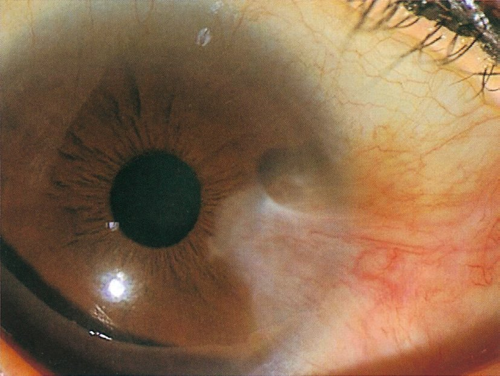
| 選択肢 | 解説 |
|---|---|
| ａ 小児期に多い。 | 翼状片は中高年に多い。紫外線曝露の累積が発症に関わるため、長年の屋外労働（農業・漁業・建設）や低緯度地域の居住者に多い。小児にはみられない。 |
| ｂ 遺伝性である。 | 遺伝性疾患ではない。環境因子（紫外線・粉塵・乾燥・慢性炎症）が主因の後天性疾患である。 |
| ｃ 悪性腫瘍化する。 | 翼状片は良性の線維血管性増殖であり悪性化しない。ただし外観の似た病変として結膜上皮内新生物〈CIN〉や扁平上皮癌があり、非典型的な例（片眼性・急速増大・厚く隆起・色素や白色角化を伴う）では病理検索が必要である。 |
| ◯ ｄ 外的刺激が誘因となる。 | 写真は、鼻側の球結膜から角膜へ三角形（翼状）に侵入する血管を伴う線維性の組織——翼状片である。発症には紫外線曝露が最大の危険因子で、ほかに粉塵・乾燥・風といった慢性の外的刺激が関与する。刺激が輪部の幹細胞を傷害し、結膜下組織の線維血管性増殖が角膜上へ這い上がると考えられている。 |
| ｅ 放射線治療が第一選択である。 | 治療の基本は手術（切除）である。単純切除は再発率が高いため、遊離結膜弁移植や羊膜移植を併用し、症例によってマイトマイシンCを補助的に用いる。かつてβ線照射が再発予防に用いられたが、強膜融解などの合併症があり第一選択ではない。 |
| 項目 | 内容 |
|---|---|
| 好発 | 中高年・屋外労働者・低緯度地域。鼻側に多い |
| 原因 | 紫外線曝露の累積（＋粉塵・乾燥・風）。遺伝性ではない |
| 性質 | 良性の線維血管性増殖。悪性化しない |
| 症状 | 整容的問題・充血・不正乱視・瞳孔領への進入で視力低下 |
| 治療 | 手術（切除＋遊離結膜弁移植／羊膜移植）。単純切除は再発率が高い |
| 予防 | サングラス・帽子による紫外線対策 |
| 鑑別 | 瞼裂斑（角膜へ侵入しない）／偽翼状片（外傷後）／結膜上皮内新生物 |
| 選択肢 | 解説 |
|---|---|
| ａ 仮性同色表検査 | 色覚異常のスクリーニング検査である。本例の訴えは眼痛と頭重感であり、色の識別の問題ではない。 |
| ◯ ｂ 近点距離測定 | 46歳という年齢と「書類を多く読む」という近業中心の作業内容から、老視（調節力の低下）による眼精疲労を疑う。近点距離を測って調節力を算出し、年齢相当かを確認する（第1章NO.12・NO.23と同じ論点）。調節を無理に働かせ続けることが「午後になると悪化する」眼痛・頭重感の典型的な原因である。 |
| ◯ ｃ 涙液分泌検査 | 眼精疲労のもう1つの代表的な原因がドライアイである。中年女性に多く、VDT作業や読書では瞬目回数が減って涙液の蒸発が進むため「午後になるほど悪化する」経過をとる。Schirmer試験で涙液分泌量を、フルオレセイン染色とBUT（涙液層破壊時間）で涙液の安定性を評価する。 |
| ｄ 角膜知覚検査 | 角膜知覚検査は角膜ヘルペスや神経麻痺性角膜症を疑うときに行う。本例に角膜病変を疑う所見はない。 |
| ｅ 頭部単純CT | 頭蓋内病変を疑う所見——視野異常・うっ血乳頭・眼球運動障害・神経学的異常——がない。本例は眼位・眼球運動正常、眼底正常、眼圧正常であり、まず眼精疲労の一般的な原因（調節・涙液・屈折・眼位）を調べるのが順序である。 |
| 群 | 原因 | 検査 | 本例 |
|---|---|---|---|
| 調節性 | 老視・未矯正の遠視・調節痙攣 | 近点距離測定（調節力） | 46歳・近業中心 → 疑わしい |
| 眼表面 | ドライアイ | Schirmer試験・BUT・染色 | 中年女性・近業 → 疑わしい |
| 屈折性 | 未矯正・過矯正・不同視 | 屈折検査 | 視力は良好（右1.2・左1.2×+0.5D） |
| 筋 性 | 斜位・輻湊不全 | 遮閉試験・輻湊近点 | 「眼位と眼球運動に異常なし」で除外 |
| 症候性 | 緑内障・ぶどう膜炎・全身疾患 | 眼圧・眼底・全身検索 | 眼圧16mmHg・眼底正常で否定的 |
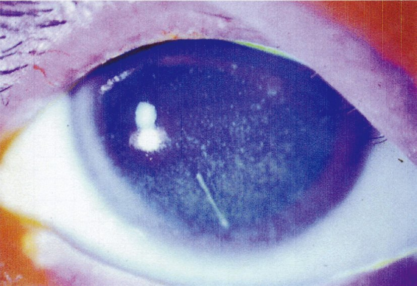
| 選択肢 | 解説 |
|---|---|
| ａ 翼状片 | 翼状片は紫外線などの慢性刺激により鼻側の結膜が角膜へ三角形に侵入する病変（NO.61）で、Sjögren症候群とは関係しない。 |
| ◯ ｂ 糸状角膜炎 | 重症のドライアイに特徴的な所見である。剝がれかけた角膜上皮に粘液（ムチン）が絡んで糸状の付着物となり、一端が角膜に付いたまま瞬目のたびに引っ張られる。これが強い異物感と眼痛の原因になる。フルオレセインで糸状に染まり、「数日前からの眼痛」という訴えを説明する。 |
| ｃ 帯状角膜変性 | 角膜の瞼裂部（露出部）にカルシウムが沈着して帯状の白色混濁を生じるもので、高カルシウム血症、慢性ぶどう膜炎（若年性特発性関節炎に伴う虹彩毛様体炎）、長期のシリコーンオイル留置などが原因である。フルオレセインで染まる病変ではない。 |
| ｄ 樹枝状角膜炎 | 単純ヘルペスウイルスによる角膜ヘルペスの所見（NO.52）。先端が膨らむ樹枝状の染色が特徴で、角膜知覚が低下する。本例はSjögren症候群による乾燥が病態であり、ヘルペスを疑う経過ではない。 |
| ◯ ｅ 点状表層角膜炎 | ドライアイの最も基本的な角膜所見である。涙液が減って角膜上皮が乾燥・障害され、フルオレセインで点状にびまん性に染色される。とくに瞼裂部（下方〜中央の露出部）に強く出る。糸状角膜炎と併存するのが重症ドライアイの典型像である。 |
| 所見 | 染色の見え方 | 意味・背景 |
|---|---|---|
| 点状表層角膜炎〈SPK〉 | びまん性の点状染色（瞼裂部に強い） | ドライアイの基本所見。CL障害・薬剤毒性でも出る |
| 糸状角膜炎 | 糸状の付着物が染まる | 重症ドライアイ。瞬目で牽引され強い眼痛 |
| 樹枝状角膜炎 | 先端が膨らむ樹枝状 | 角膜ヘルペス。角膜知覚低下 |
| 帯状角膜変性 | 染まらない（白色混濁） | 瞼裂部のカルシウム沈着。高Ca血症・慢性ぶどう膜炎 |
| 翼状片 | 染まらない（線維血管組織） | 紫外線などの慢性刺激 |
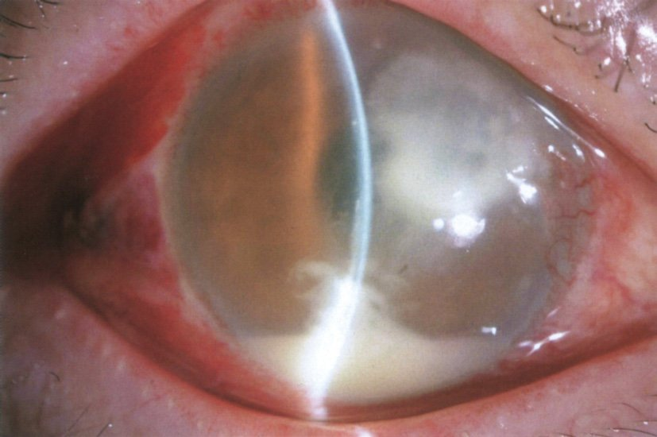
| 選択肢 | 解説 |
|---|---|
| ａ 結 膜 | 結膜も同時に傷ついた可能性はあるが、結膜は再生が速く、視力低下と強い眼痛の主因にはならない。結膜の外傷だけで手動弁まで視力が落ちることはない。 |
| ◯ ｂ 角 膜 | 木の枝という植物による外傷で角膜上皮のバリアが破れ、そこから微生物（とくに真菌）が侵入して角膜に感染巣を作った。1週間かけて次第に悪化した経過は、数日で急激に進む細菌性より緩徐な真菌性角膜炎に合致する。写真では角膜に白色の浸潤・混濁があり、炎症が前房へ波及して前房蓄膿を生じている——最初の病変は角膜であり、前房や虹彩の所見はその結果である。 |
| ｃ 前 房 | 前房蓄膿は角膜の感染巣から炎症が波及した二次的な所見である。外傷で最初に傷つくのは眼球の最表面（角膜）であって前房ではない。 |
| ｄ 虹 彩 | 虹彩は角膜と前房の奥にあり、穿孔性外傷でなければ直接損傷されない。虹彩の炎症も角膜からの波及によるものである。 |
| ｅ 水晶体 | 水晶体は虹彩のさらに後方にあり、外傷が最初に及ぶ部位ではない。鈍的外傷では外傷性白内障や水晶体脱臼を生じうるが、本例の経過（感染の進行）を説明しない。 |
| 背景 | 起因 | 経過 | 特徴 |
|---|---|---|---|
| 植物・土壌による外傷／ステロイド長期使用 | 真菌（Fusarium・Aspergillus） | 数日〜数週と緩徐 | 羽毛状の辺縁・衛星病巣・内皮斑 |
| ソフトコンタクトレンズ | 緑膿菌 | 1〜2日で急速 | 輪状浸潤・角膜融解・穿孔（NO.55・NO.69） |
| SCLの不適切なケア（水道水） | アカントアメーバ | 数週 | 所見に不釣り合いな激痛・放射状角膜神経炎 |
| 誘因での再活性化 | 単純ヘルペス | 再発性 | 樹枝状病変・角膜知覚低下（痛みが乏しい） |
| 金属片などの異物 | 細菌（ブドウ球菌等） | 数日 | 異物とその周囲のリング状の錆 |
| 選択肢 | 解説 |
|---|---|
| ａ 乾性角結膜炎 | ドライアイのことで、涙液の量的・質的異常による非感染性の角結膜上皮障害である。Sjögren症候群に伴うものが代表的（NO.63）。 |
| ◯ ｂ 樹枝状角膜炎 | 単純ヘルペスウイルス〈HSV-1〉による角膜ヘルペスの上皮型である（NO.52）。三叉神経節に潜伏したウイルスが再活性化し、フルオレセインで樹枝状に染まる上皮病変を作る。角膜知覚が低下し、治療はアシクロビル眼軟膏。 |
| ◯ ｃ 流行性角結膜炎 | アデノウイルス（8型・19型・37型など）による。名称に「角結膜炎」とあるとおり、結膜炎に加えて角膜（点状表層角膜症 → 角膜上皮下混濁）を侵す。接触感染で広がり院内感染の原因となる（NO.56・NO.66・NO.74・NO.76）。 |
| ｄ 巨大乳頭結膜炎 | コンタクトレンズ・義眼・縫合糸などの機械的刺激とアレルギー反応による非感染性疾患である。上眼瞼結膜に巨大乳頭を生じ、原因の除去が治療になる。 |
| ｅ フリクテン性角結膜炎 | 結核菌やブドウ球菌の菌体成分に対するⅣ型（遅延型）アレルギーによって、角膜輪部や結膜に小さな灰白色の結節（フリクテン）を生じるものである。菌そのものの感染ではなくアレルギー反応であり、ウイルス性でもない。治療はステロイド点眼と基礎疾患（結核・眼瞼縁炎）の検索。 |
| 疾患 | 原因 | 治療の軸 |
|---|---|---|
| 樹枝状角膜炎 | 単純ヘルペスウイルス | アシクロビル眼軟膏（ステロイド単独は禁忌） |
| 流行性角結膜炎 | アデノウイルス | 対症療法＋感染対策（特異的治療なし） |
| 乾性角結膜炎（ドライアイ） | 涙液の量・質の異常（非感染性） | 人工涙液・涙点プラグ |
| 巨大乳頭結膜炎 | 機械的刺激＋アレルギー | 原因の除去（CLの中止・変更） |
| フリクテン性角結膜炎 | Ⅳ型アレルギー（結核菌・ブドウ球菌の菌体成分） | ステロイド点眼＋基礎疾患の検索 |
| 封入体結膜炎 | クラミジア（細菌） | マクロライド系の全身投与 |
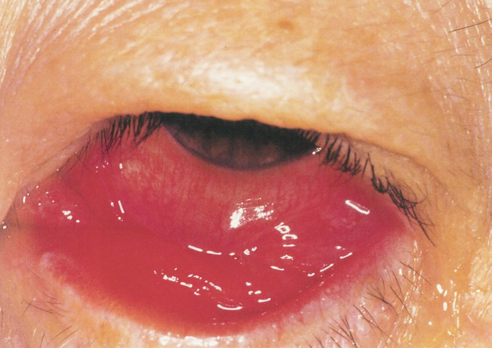
| 選択肢 | 解説 |
|---|---|
| ａ 頻回の洗眼を勧める。 | 洗眼は勧めない。洗眼液や洗眼カップを介してウイルスを拡散させるうえ、涙液に含まれる抗菌成分やムチンを洗い流して角膜上皮を傷める。洗眼カップの共用は他者への感染源にもなる。 |
| ｂ コンタクトレンズの装用は許可する。 | 炎症が治まるまで装用を中止させる。レンズは角膜上皮を傷つけて症状を悪化させ、レンズ自体が汚染されて再感染や他者への感染源となる。 |
| ｃ 家族より先の入浴を勧める。 | 逆である。浴槽の湯やタオルを介した接触感染を防ぐため、入浴は家族の最後にさせる。タオル・洗面用具は専用にし、共用しない。 |
| ◯ ｄ 流水による手洗いの励行を勧める。 | 流行性角結膜炎はアデノウイルスによる接触感染であり、涙液・眼脂に触れた手指が最大の伝播経路である。流水と石けんによる手洗いが最も有効かつ基本的な予防策で、「目をこすらない」「触った後は必ず手を洗う」指導と併せて行う。 |
| ｅ 会社への出勤は許可する。 | 感染力が強く、職場での集団発生を招くため出勤は控えさせる。学校保健安全法では第三種の感染症として「医師が感染のおそれがないと認めるまで」出席停止となる。本例が「同僚から」感染していること自体が職場内伝播の実例である。 |
| 指導内容 | 理由 | |
|---|---|---|
| ○ | 流水と石けんによる手洗いの励行 | 接触感染の主経路を断つ |
| タオル・洗面用具を専用にする | 共用が伝播源になる | |
| 入浴は家族の最後にする | 湯・タオルを介した伝播を防ぐ | |
| コンタクトレンズを中止する | 上皮障害の悪化とレンズの汚染を防ぐ | |
| 登校・出勤を控える | 学校保健安全法 第三種 | |
| × | 頻回の洗眼 | ウイルスの拡散・涙液成分の喪失・上皮障害 |
| 家族より先に入浴 | 後続の家族へ伝播 | |
| 出勤の許可 | 職場での集団発生 |
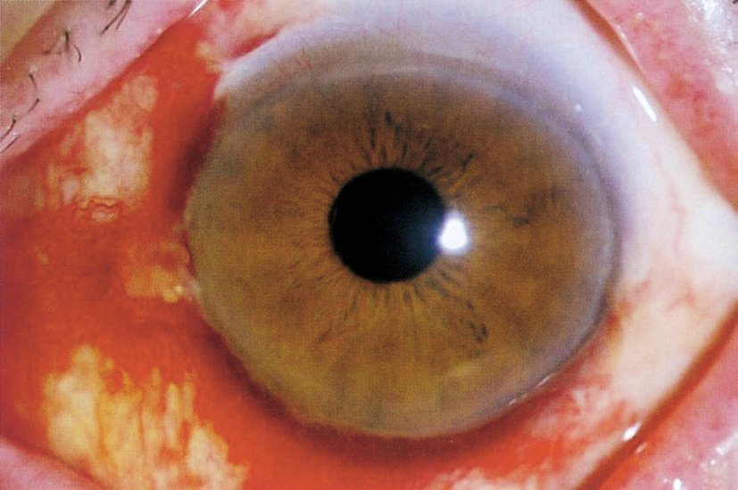
| 選択肢 | 解説 |
|---|---|
| ａ 圧迫眼帯 | 圧迫眼帯は角膜上皮欠損の治癒促進や術後の保護に用いる。結膜下出血に対しては不要であり、圧迫しても吸収は早まらない。 |
| ◯ ｂ 経過観察 | 写真は境界明瞭でべったりとした鮮紅色の結膜下出血である。眼痛なし・眼脂なし・矯正視力良好（両眼1.2）・眼圧正常という所見がそろい、視機能に影響しない良性の病態と判断できる。血液は1〜2週間で自然に吸収されるので、経過観察のみでよい。「入浴後」という誘因（静脈圧の上昇）も典型的である。 |
| ｃ 結膜下洗浄 | そのような処置は存在しない。出血は結膜と強膜の間にあり、表面から洗い流すことはできない。 |
| ｄ 眼球マッサージ | 眼球マッサージは網膜中心動脈閉塞症で塞栓を末梢へ流す目的などに用いる特殊な手技である。結膜下出血に行えば、血管をさらに傷つけて出血を増やす危険がある。 |
| ｅ 抗菌薬眼軟膏塗布 | 感染症ではないので抗菌薬は不要である。眼脂もなく、細菌性結膜炎を疑う所見はない。 |
| 所見 | 対応 | |
|---|---|---|
| 結膜下出血 | 無痛・眼脂なし・視力正常・眼圧正常 | 経過観察（1〜2週で自然吸収） |
| 細菌性結膜炎 | 膿性眼脂 | 抗菌点眼 |
| 流行性角結膜炎 | 漿液性眼脂・濾胞・耳前リンパ節腫脹 | 対症療法＋感染対策（NO.66） |
| 急性緑内障発作 | 激しい眼痛・頭痛・嘔吐・虹視・毛様充血・中等度散瞳・角膜浮腫・眼圧50mmHg超 | 緊急の眼圧下降とレーザー虹彩切開術 |
| 虹彩毛様体炎 | 毛様充血・眼痛・羞明・前房内細胞とフレア | ステロイド点眼＋散瞳薬 |
| 感染性角膜炎 | 白色浸潤・前房蓄膿・強い眼痛・視力低下 | 擦過培養＋抗菌点眼の頻回投与 |
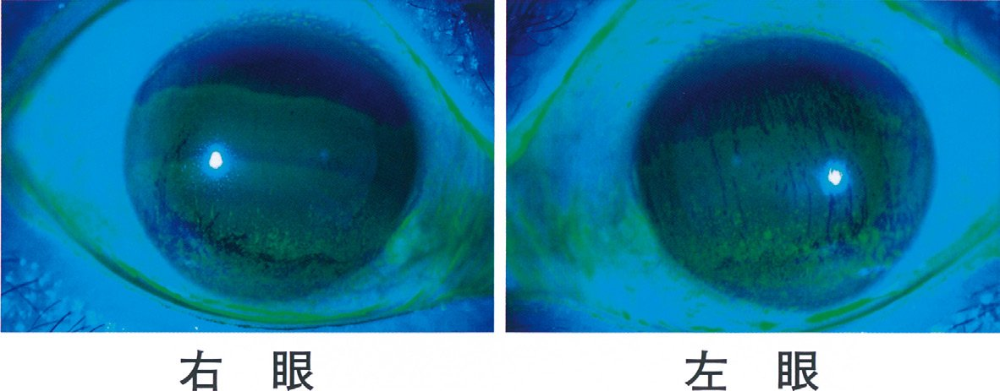
| 選択肢 | 解説 |
|---|---|
| ａ 抗菌薬 | 細菌感染を疑う所見（膿性眼脂・白色浸潤・前房蓄膿）がない。むしろ防腐剤を含む点眼を頻回に使うと角膜上皮障害を悪化させる。 |
| ｂ 縮瞳薬 | ピロカルピンなどの縮瞳薬は閉塞隅角緑内障の発作時などに用いる。眼圧は正常（15/16mmHg）で適応がない。 |
| ｃ β遮断薬 | 房水産生を抑える緑内障治療薬である。眼圧正常の本例に用いる理由がない。 |
| ◯ ｄ 人工涙液 | Schirmer試験が右5mm・左4mm（基準10〜15）と涙液分泌が明らかに低下しており、フルオレセイン染色で角膜上皮障害（点状表層角膜症）を認める——ドライアイである。VDT作業で瞬目回数が減って涙液の蒸発が進むため「長時間パソコンを使用すると増悪する」。治療は不足している涙液の補充＝人工涙液（またはヒアルロン酸点眼）が基本である。 |
| ｅ 副腎皮質ステロイド | 重症例で炎症を抑える目的に短期間用いることはあるが第一選択ではない。漫然と使えばステロイド緑内障・白内障・易感染を招くため、まず補充療法から始める。 |
| 涙液減少型 | 蒸発亢進型（BUT短縮型） | |
|---|---|---|
| 本態 | 液層（涙腺）の分泌低下 | 油層・ムチン層の異常で保持できない |
| Schirmer試験 | 低下（5mm以下） | 正常なことが多い |
| BUT | 短縮 | 短縮（5秒以下）が主所見 |
| 原因 | Sjögren症候群・加齢・薬剤性・LASIK後 | マイボーム腺機能不全・VDT作業・CL・エアコン |
| 治療 | 人工涙液・ヒアルロン酸・涙点プラグ・自己血清 | ジクアホソル／レバミピド・温罨法・眼瞼清拭・環境調整 |
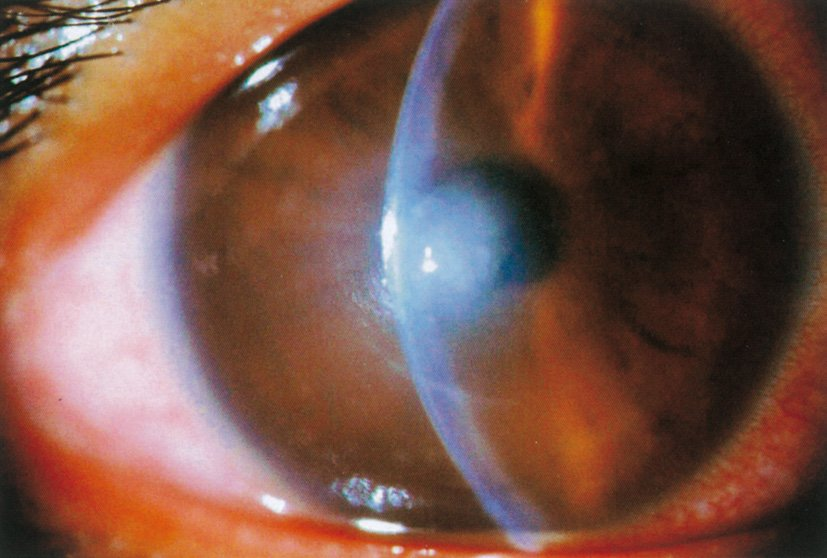
| 選択肢 | 解説 |
|---|---|
| ａ 淋 菌 | 淋菌はGram陰性双球菌である。起こすのは超急性の結膜炎（大量の膿性眼脂・急速な角膜穿孔）で、性行為感染や新生児の産道感染（新生児膿漏眼）が背景となる。形態（桿菌でない）と背景が合わない。 |
| ◯ ｂ 緑膿菌 | 緑膿菌〈Pseudomonas aeruginosa〉はGram陰性桿菌で、ソフトコンタクトレンズ関連の細菌性角膜炎の最大の起因菌である。水回りや湿潤環境を好み、レンズケースや保存液の中でバイオフィルムを作って生き延びる。本例の「2週間使い捨てを4週間使用」という不適切な使用がまさにその温床になった。蛋白分解酵素を産生して急速に角膜を融解させ、数日で穿孔に至りうる緊急疾患である。 |
| ｃ クラミジア | クラミジアは偏性細胞内寄生性の細菌で、Gram染色では染まらない。起こすのは慢性・遷延性の濾胞性結膜炎（封入体結膜炎）で、急速に進行する角膜潰瘍ではない。 |
| ｄ サルモネラ菌 | Gram陰性桿菌ではあるが、腸管感染症（食中毒・腸チフス）の起因菌であり、角膜炎の原因としては考えにくい。 |
| ｅ レジオネラ菌 | Gram陰性桿菌で水系環境に生息するが、起こすのは肺炎（在郷軍人病）である。通常のGram染色では染まりにくく、角膜炎の起因菌でもない。 |
| Gram所見 | 菌 | 起こす疾患 |
|---|---|---|
| 陰性桿菌 | 緑膿菌 | SCL関連の細菌性角膜炎（急速に融解・穿孔） |
| 陰性双球菌 | 淋菌 | 超急性結膜炎・新生児膿漏眼（大量の膿性眼脂・角膜穿孔） |
| 陽性球菌 | 黄色ブドウ球菌・肺炎球菌 | 麦粒腫・細菌性結膜炎・細菌性角膜炎・涙囊炎 |
| 陰性桿菌 | インフルエンザ菌 | 小児の結膜炎・涙囊炎・眼窩蜂窩織炎 |
| 染まらない | クラミジア | 封入体結膜炎・トラコーマ（遷延性の濾胞性結膜炎） |
| 選択肢 | 解説 |
|---|---|
| ａ 角膜異物 | 誘因である。異物そのものが角膜上皮のバリアを破り、同時に細菌を持ち込む。異物を除去したあとの上皮欠損も感染の入口となる。 |
| ◯ ｂ 視神経炎 | これが誘因でない。視神経炎は視神経の脱髄性／炎症性疾患であり、眼球の表面（角膜）とはまったく別の場所の病態である。角膜上皮のバリアにも涙液にも影響せず、角膜感染の危険因子にならない。 |
| ｃ 顔面神経麻痺 | 誘因である。眼輪筋が麻痺して閉瞼できなくなり（兎眼）、角膜が露出したまま乾燥して上皮障害を起こす（露出性角膜炎）。そこに細菌が感染すれば角膜潰瘍となる（第1章NO.5）。 |
| ｄ 涙液分泌障害 | 誘因である。涙液には洗い流す作用に加えてリゾチーム・ラクトフェリン・分泌型IgAといった抗菌成分が含まれる。涙が減れば角膜上皮が乾燥して障害され、同時に抗菌防御も失われる（NO.63・NO.68）。 |
| ｅ コンタクトレンズ装用 | 誘因である。機械的な上皮損傷、角膜への酸素供給の低下、レンズ・ケースの汚染という3方向から感染の条件を整える（NO.55・NO.69）。 |
| 壊れる防御 | 誘因 | 結果 |
|---|---|---|
| 上皮バリア | 角膜異物・外傷・コンタクトレンズ | 菌の侵入門戸ができる |
| 涙液（洗浄＋抗菌） | ドライアイ・Sjögren症候群・薬剤性 | 乾燥による上皮障害＋抗菌成分の喪失 |
| 閉瞼・瞬目 | 顔面神経麻痺（兎眼）・眼瞼外反・意識障害 | 露出性角膜炎 → 二次感染 |
| 角膜知覚 | 角膜ヘルペス後・三叉神経障害・糖尿病 | 神経麻痺性角膜症（痛みを訴えず発見が遅れる） |
| 局所免疫 | ステロイド点眼の長期使用 | 易感染・真菌の増殖 |
| （無関係） | 視神経炎 | 視神経の疾患で角膜には関与しない |
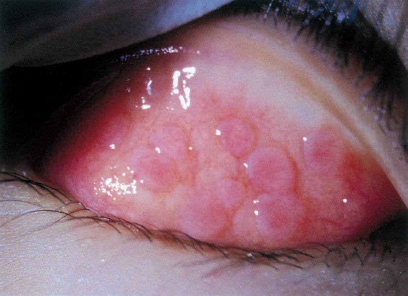
| 選択肢 | 解説 |
|---|---|
| ａ 抗菌薬 | 細菌性結膜炎に用いる。細菌性なら主訴は膿性眼脂であり、瘙痒が前面に出ることはない。 |
| ｂ 抗真菌薬 | 真菌性角膜炎などに用いる。植物による外傷やステロイド長期使用といった背景がなく、結膜の瘙痒とは無関係である。 |
| ｃ 人工涙液 | ドライアイの補充療法である。アレルゲンを洗い流す補助にはなりうるが、Ⅰ型アレルギー反応そのものを抑えないため「有効な点眼薬」とはいえない。 |
| ◯ ｄ 抗アレルギー薬 | 2週間続く両眼の瘙痒と結膜充血、上眼瞼結膜の乳頭増殖——アレルギー性結膜炎である。治療の第一選択は抗アレルギー点眼薬。メディエーター遊離抑制薬（クロモグリク酸）は効果発現まで数日を要するので予防的に、H1受容体拮抗薬（オロパタジン、ケトチフェン）は即効性があり症状が出てからでも有効である。矯正視力が両眼1.2と保たれており、角膜合併症を伴う春季カタルではない。 |
| ｅ プロスタグランディン関連薬 | ラタノプロストなどの緑内障治療点眼薬で、ぶどう膜強膜流出路からの房水流出を促して眼圧を下げる。結膜のアレルギーには無関係である。 |
| NO.51（120A-53） | NO.58（114A-47） | NO.71（本問） | |
|---|---|---|---|
| 年齢・性 | 18歳女子 | 14歳男子 | 6歳男児 |
| 背景 | 花粉症の既往 | 1か月の瘙痒 | 2週間の瘙痒 |
| 視力 | 記載なし | 左0.4（低下） | 両眼1.2（正常） |
| 結膜所見 | 乳頭増殖 | 敷石状の巨大乳頭 | 乳頭増殖 |
| 診断 | アレルギー性結膜炎 | 春季カタル | アレルギー性結膜炎 |
| 問われたこと | 治療薬 | 診断名 | 治療薬 |
| 答え | 抗アレルギー薬 | 春季カタル | 抗アレルギー薬 |
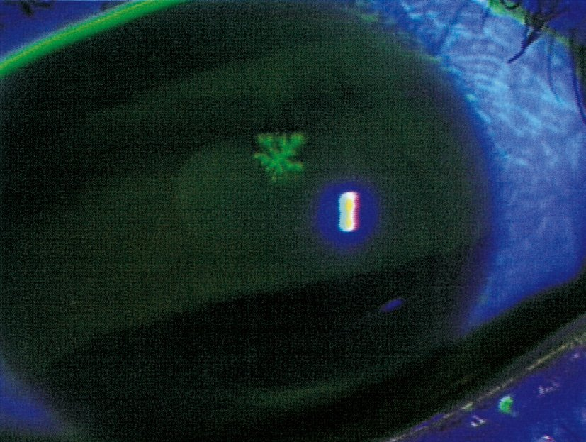
| 選択肢 | 解説 |
|---|---|
| ａ 抗菌点眼薬 | 細菌性角膜炎なら境界の比較的明瞭な白色浸潤・膿性眼脂・前房蓄膿を伴い、視力はより強く低下する。写真の樹枝状という形態が細菌性を否定する。 |
| ｂ 抗真菌点眼薬 | 真菌性角膜炎は植物による外傷やステロイド長期使用が背景にあり、羽毛状の辺縁と衛星病巣を伴って数週の経過をとる（NO.64）。樹枝状の染色パターンとは異なる。 |
| ◯ ｃ アシクロビル眼軟膏 | 写真はフルオレセインで樹枝状に染まる角膜上皮病変＝樹枝状角膜炎で、単純ヘルペスウイルスによる角膜ヘルペス（上皮型）である。治療は抗ウイルス薬であるアシクロビル眼軟膏。通常は1日5回塗布し、上皮の治癒に伴って減量する。重症例や実質型では抗ウイルス薬の全身投与（バラシクロビル内服）を併用する。 |
| ｄ 副腎皮質ステロイド点眼薬 | 上皮型の角膜ヘルペスにステロイド単独は禁忌である。局所免疫を抑えてウイルスの増殖を助長し、樹枝状病変を地図状角膜潰瘍へ悪化させる。実質型（円板状角膜炎）では抗ウイルス薬の下で併用するが、本例は上皮型である。 |
| ｅ プロスタグランディン関連点眼薬 | 緑内障治療薬（ラタノプロスト等）で、ぶどう膜強膜流出路からの房水流出を促して眼圧を下げる。眼圧は右11mmHg・左12mmHgと正常であり適応がない。 |
| 上皮型 | 実質型（円板状） | |
|---|---|---|
| 病態 | 上皮細胞内でのウイルス増殖 | ウイルス抗原への免疫反応 |
| 所見 | 樹枝状／地図状の上皮病変（染色される） | 実質の円板状浮腫・混濁 |
| 治療 | アシクロビル眼軟膏 | 抗ウイルス薬＋ステロイド点眼 |
| ステロイド単独 | 禁忌（地図状潰瘍へ悪化） | 不可（必ず抗ウイルス薬と併用） |
| 共通 | 角膜知覚の低下・片眼性・再発性 | |
| 選択肢 | 解説 |
|---|---|
| ◯ ａ 咽頭結膜熱 | アデノウイルス（主に3型）による。発熱・咽頭炎・結膜炎の三徴をとり、夏季にプールを介して小児に流行する（プール熱）（NO.57）。 |
| ｂ 春季カタル | Ⅰ型アレルギーによる重症のアレルギー性結膜疾患で、感染症ではない（NO.58）。 |
| ｃ 封入体結膜炎 | Chlamydia trachomatis（クラミジア・トラコマチス）による——クラミジアは細菌であってウイルスではない。偏性細胞内寄生性で、成人では性行為感染症として（尿道炎・子宮頸管炎と同時に）、新生児では産道感染により起こる。遷延する濾胞性結膜炎で、治療はマクロライド系やテトラサイクリン系の全身投与である。 |
| ｄ 巨大乳頭結膜炎 | コンタクトレンズ・義眼・縫合糸などの機械的刺激とアレルギー反応による非感染性疾患である。 |
| ◯ ｅ 急性出血性結膜炎 | エンテロウイルス70型やコクサッキーウイルスA24変異型による。潜伏期が約1日と極めて短く、結膜下出血を伴う強い充血が特徴（アポロ病）（NO.53）。 |
| 種別 | 疾患 | 治療 |
|---|---|---|
| ウイルス | 咽頭結膜熱（アデノ3型） | 対症療法＋感染対策（特異的治療なし） |
| 流行性角結膜炎（アデノ8型等） | ||
| 急性出血性結膜炎（エンテロ70型等） | 同上 | |
| 細菌 | 封入体結膜炎・トラコーマ（クラミジア） | マクロライド／テトラサイクリンの全身投与 |
| 細菌性結膜炎（ブドウ球菌・肺炎球菌・インフルエンザ菌） | 抗菌点眼 | |
| 非感染性 | 春季カタル・アレルギー性結膜炎（Ⅰ型） | 抗アレルギー点眼／免疫抑制点眼 |
| 巨大乳頭結膜炎（機械的刺激） | 原因の除去 |
| 選択肢 | 解説 |
|---|---|
| ａ エンテロウイルスが原因である。 | 原因はアデノウイルス（8型・19型・37型・54型など）である。エンテロウイルス70型（およびコクサッキーA24変異型）が原因となるのは急性出血性結膜炎で、別の疾患である（NO.53・NO.73）。 |
| ｂ 潜伏期は1〜2日である。 | 流行性角結膜炎の潜伏期は約1〜2週間と長い。この長さが、自覚のないまま接触者へ広げてしまう理由であり、院内感染対策を難しくしている。潜伏期が約1日と極めて短いのは急性出血性結膜炎である。 |
| ｃ 膿性眼脂が特徴である。 | ウイルス性結膜炎の眼脂は漿液性（水様）である。膿性眼脂は細菌性結膜炎の特徴で、この性状の違いが結膜炎の鑑別で最初の手がかりになる。 |
| ◯ ｄ 角膜上皮下混濁を生じる。 | 流行性角結膜炎の名に「角」が入っているとおり、結膜炎だけでなく角膜も侵す。急性期には点状表層角膜症を生じ、発症1〜2週後から角膜上皮下混濁〈subepithelial infiltrate：SEI〉が出現する。これはウイルス抗原に対する遅延型免疫反応により角膜実質浅層に生じる点状の混濁で、霧視・羞明・不正乱視の原因となり数か月〜年余残ることがある。視力に影響する場合はステロイド点眼を用いる。 |
| ｅ プロスタグランディン関連薬の点眼治療を行う。 | プロスタグランディン関連薬は緑内障治療薬（ラタノプロスト等）で、結膜炎の治療とは無関係である。流行性角結膜炎に特異的な治療薬はなく、混合感染の予防に抗菌点眼、炎症が強ければステロイド点眼という対症療法を行う。 |
| 流行性角結膜炎 | 咽頭結膜熱 | 急性出血性結膜炎 | |
|---|---|---|---|
| ウイルス | アデノ8・19・37・54型 | アデノ3型 | エンテロ70型・コクサッキーA24変異型 |
| 潜伏期 | 1〜2週間 | 5〜7日 | 約1日 |
| 眼 脂 | いずれも漿液性（水様）——膿性は細菌性 | ||
| 特徴 | 偽膜・角膜上皮下混濁 | 発熱＋咽頭炎（プール熱） | 結膜下出血（アポロ病） |
| 角膜混濁 | 残る（数か月〜年余） | 残りにくい | 残さない |
| 出席停止 | 第三種 | 第二種（症状消退後2日） | 第三種 |
| 選択肢 | 解説 |
|---|---|
| ａ Reiter 症候群 | 反応性関節炎（Reiter症候群）は尿道炎・関節炎・結膜炎の三徴をとる。HLA-B27関連で、クラミジアや腸管感染のあとに急性に発症する。10年に及ぶ乾燥症状という経過に合わない。 |
| ◯ ｂ Sjögren 症候群 | Schirmer試験が両眼1mm（基準10〜15）と涙液分泌が著しく低下し、角膜に点状の上皮欠損（点状表層角膜炎）を認める——乾性角結膜炎である。中年女性で10年に及ぶ慢性の異物感という経過も合致する。涙腺・唾液腺を標的とする自己免疫性の慢性炎症であるSjögren症候群を考え、口腔乾燥の有無、抗SS-A/SS-B抗体、合併する膠原病（関節リウマチなど）を確認する。 |
| ｃ Sturge-Weber 症候群 | 三叉神経第1・2枝領域の顔面ポートワイン母斑、軟膜血管腫（てんかん・片麻痺）、緑内障（牛眼）を特徴とする母斑症である。乾燥症状とは関係せず、眼圧も正常である。 |
| ｄ von Recklinghausen 病 | 神経線維腫症Ⅰ型で、カフェオレ斑・神経線維腫・虹彩結節（Lisch結節）・視神経膠腫を特徴とする。涙液分泌の低下をきたす疾患ではない。 |
| ｅ Wilson 病 | 銅代謝異常により肝硬変・錐体外路症状をきたし、角膜輪部のDescemet膜に銅が沈着してKayser-Fleischer輪を生じる。細隙灯で角膜周辺に緑褐色の輪として観察されるが、涙液分泌は障害されない。 |
| 疾患 | 眼所見 | 全身所見 |
|---|---|---|
| Sjögren症候群 | 乾性角結膜炎（Schirmer低下・点状表層角膜炎・糸状角膜炎） | 口腔乾燥・耳下腺腫脹・関節痛。抗SS-A/SS-B抗体 |
| Reiter症候群（反応性関節炎） | 結膜炎・前部ぶどう膜炎 | 尿道炎＋関節炎の三徴。HLA-B27 |
| Sturge-Weber症候群 | 緑内障（牛眼）・脈絡膜血管腫 | 顔面ポートワイン母斑（Ⅴ1・Ⅴ2）・軟膜血管腫・てんかん |
| von Recklinghausen病 | 虹彩のLisch結節・視神経膠腫 | カフェオレ斑・神経線維腫 |
| Wilson病 | Kayser-Fleischer輪（角膜輪部の銅沈着） | 肝硬変・錐体外路症状・血清セルロプラスミン低下 |
| 選択肢 | 解説 |
|---|---|
| ａ 患者の抗菌薬点眼 | 抗菌薬はアデノウイルスには無効である。混合感染の予防に処方されることはあるが、院内感染の防止（他者への伝播の遮断）には寄与しない。 |
| ｂ 患者の抗菌薬内服 | 同じくウイルスには無効で、感染拡大の防止にならない。不要な抗菌薬の投与は耐性菌を生むだけである。 |
| ｃ 患者の抗ウイルス薬内服 | アデノウイルスに有効な抗ウイルス薬は存在しない。アシクロビルはヘルペス属（HSV・VZV）にしか効かず、アデノウイルスには無効である。「特異的治療がない」ことこそが、感染対策を徹底せざるを得ない理由である。 |
| ◯ ｄ 患者が接触した物のアルコール消毒 | アデノウイルスは涙液・眼脂に含まれ、患者が触れた器具や環境表面を介して伝播する。眼圧計のプリズム、細隙灯の顎台と額当て、診察椅子、ドアノブなどを消毒することが院内感染防止の柱である。ただしアデノウイルスはエンベロープを持たないためアルコールが効きにくい——消毒用エタノールを十分量用いて接触時間を確保するか、次亜塩素酸ナトリウムを用いる必要がある。 |
| ◯ ｅ 患者および医療関係者の流水での手洗い | 接触感染であるから、手指を介した伝播を断つことが最も基本かつ有効である。患者本人はもちろん、医療関係者が患者ごとに流水と石けんで手を洗うことが不可欠である。医療者の手指が院内で最大の媒介物になるため、手袋の着用と患者ごとの交換も併せて行う。 |
| 手段 | 理由 | |
|---|---|---|
| 有効 | 患者・医療者の流水での手洗い（＋手袋の交換） | 接触感染の主経路を断つ |
| 患者が接触した物の消毒 | 環境表面で長く生存するため（アルコールは効きにくく十分な接触時間か次亜塩素酸を） | |
| 無効 | 患者の抗菌薬点眼 | 抗菌薬はウイルスに効かない |
| 患者の抗菌薬内服 | ||
| 患者の抗ウイルス薬内服 | アデノウイルスに有効な抗ウイルス薬は存在しない（アシクロビルはヘルペス属のみ） |